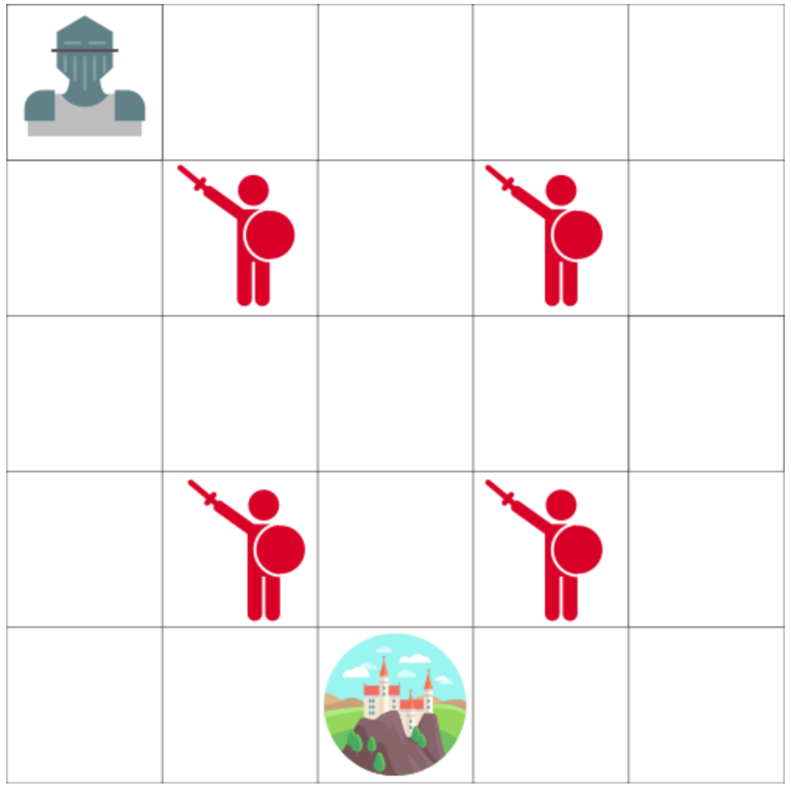
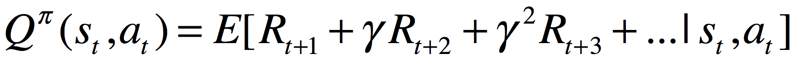
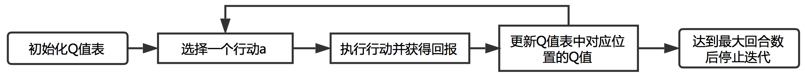
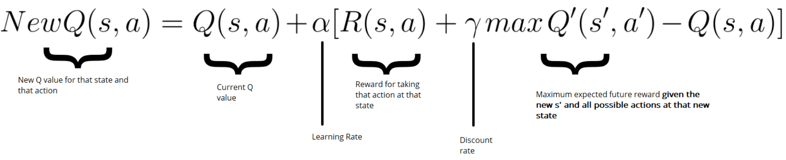
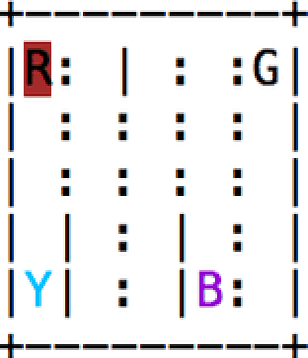

(二)强化学习之Q-learning
Q-learning是经典的强化学习算法，它是 一种基于价值的算法。
假设你现在是一名骑士，四个敌人固定不动，每一步你都可以选择向四个方向前进一格，你的职责是避开图中的敌人并且尽快赶到城堡。这样的一个 问题可以由一个得分系统来描述。
- 每一步你都会得到-1分(丢失分数就意味着你要尽可能快的到达城堡)。
- 碰到敌人游戏失败，你将被扣除100分，该回合结束。
- 到达城堡后游戏获得胜利，你将会获得100分，该回合结束。
(1)Q值表(Q-table)
我们可以通过构造一个Q值表(Q-table，Q代表着行动的质量(quality))，Q值表中的每个元素衡量
了在给定状态采取给定行动时将会获得的最大期望未来回报，因此我们可以让代理根据Q值表去选择每个状态下的最优行动，并最终获取游戏胜利。
Q值表的行表示环境中所有的状态，列表示在给定状态下可以采取的行动，在上面的案例中，每一个格子就代表一个状态，
因此Q值表中共有25行；在每个状态下，代理最多有四种行动(上、下、左、右)，因此Q值表共有4列(当然，在某些状态下，
有些行动是被禁止的，这将被体现在Q值表的元素中)。请注意，此算法的目的是通过Q值表进行决策，这是基于价值的算法。我们也
可以把Q值表理解为游戏的作弊器，在游戏中的某个状态下(Q值表中对应的那一行)，代理能够从作弊器中知道下一步往哪
里走(那一行所对应的最大值)可以获得最大回报，因此只要我们获得了Q值表，我们就可以解决上述的骑士问题。
(2)利用Q-learning算法更新Q值表
行动价值函数(Q函数)接收两个输入，分别是状态和行动，它会返回在该状态下采取该行动时将会获得的期望回报，我们可以把Q函数假想
为一个作弊器，我们指定某一个状态和该状态下的一个行动，就可以通过这个作弊器返回一个得分(Q值)，那么我们就可以根据得分大小来选择这个
状态下的行动。
Q值写为:

1.Q值表更新流程图
2.Q-learning更新算法
- 初始化Q值表
- 选择行动a
在当前状态s下基于当前的Q值表选择某个行动，此处我们将根据epsilon greedy strategy来选取行动。首先，我们需要定义一个 探索率"epsilon"，这个探索率将决定我们将以多大的概率随机选取一个行动。比如探索率取0.5，就意味着我们将有50%的概率随机 选取一个行动，有50%的概率根据当前的Q值表去选取一个Q值最大的行动。通常我们在游戏开始时选取探索率为100%，这样我们的代 理就会在所有Q值都为0的情况下对环境开始进行探索。随着回合数的增加，我们需要降低探索率的取值，让代理有更大的概 率去依赖Q值表选取行动。 - 执行行动并获得回报
在状态s下采取行动a，并从环境中获得下一个状态s'和回报r，接下来我们将会利用s'和r去更新Q(s,a)。 - 更新Q值表中对应位置的Q值
利用Bellman方程更新Q(s,a):

式中左侧表示新的Q值；α表示学习率，学习率决定了我们会多快地更新原有的Q值，很显然，当学习率为1时，我们 最快速地将原有的Q值更新为新计算得到的Q值；R(s,a)表示在状态s处采取行动a所获得的回报；γ表示折 扣因子；maxQ'(s',a')表示下一个状态下所能获得的最大期望未来回报，这个公式其实就是上一节介 绍的时序差分法的价值函数更新公式。 - 达到最大回合数后停止迭代
当代理死亡或者获得胜利时，算作一个回合结束，当代理进行了许多轮回合并且达到了我们给定的最大回合次数阈值时，我们认为代理已经获得了一个迭 代好的优秀的Q值表，接下来代理就可以利用这个计算好的Q值表来作出决策以获得胜利。
(3)利用numpy实现Q-learning算法
首先导入numpy、gym以及random模块，numpy模块将会用来计算并更新Q值表，gym模块用来生成我们需要的游戏环境，这样 我们就不需要自己写一个游戏环境供我们训练模型，random模块将用来生成随机数，并与探索率"epsilon"进行比较，用来控制我们是否随机选取行动。
import numpy as np
import gym
import random
接下来我们设置一些学习参数，包括以下这些参数。
env = gym.make("Taxi-v2") #利用gym生成我们需要的游戏环境
action_size = env.action_space.n
state_size = env.observation_space.n
Qtable = np.zeros((state_size, action_size)) #初始化Q值表(状态数, 行动数)
total_episodes = 15000 # 总回合数
learning_rate = 0.8 # 学习率α
max_steps = 99 # 每一回合最大游戏进行次数
gamma = 0.95 # 折扣因子
# 探索率设置
epsilon = 1.0 # 探索率
max_epsilon = 1.0 # 最大探索率
min_epsilon = 0.01 # 最小探索率
decay_rate = 0.005 # 每一回合结束后探索率通过指数衰减
然后，我们利用Q-learning对初始化的Q值表进行迭代更新，每一步更新都遵循前一部分 介绍的Q-learning更新算法。
rewards = []
for episode in range(total_episodes):
state = env.reset() #类似于每一回合结束后，进行下一次游戏时需要点击的开始游戏按钮
done = False
total_rewards = 0
for step in range(max_steps):
exp_exp_tradeoff = random.uniform(0, 1)
if exp_exp_tradeoff > epsilon:
action = np.argmax(Qtable[state, :])
else:
action = env.action_space.sample()
new_state, reward, done, info = env.step(action) #让游戏中的任务执行action动作，并返回相应的信息(新的状态s', 回报r, 游戏是否结束, 游戏信息)
#更新Q(s,a)
Qtable[state, action] = Qtable[state, action] + learning_rate * (reward +
gamma * np.max(Qtable[new_state, :]) - Qtable[state, action])
total_rewards += reward
state = new_state #让我们的角色进入到下一状态
if done:
break
#每一回合结束后衰减探索率
epsilon = min_epsilon + (max_epsilon - min_epsilon) * np.exp(-decay_rate * episode)
rewards.append(total_rewards)
print ("Score over time: " + str(sum(rewards)/total_episodes))
print(Qtable)
最后，我们就可以使用已经迭代好的Q值表去进行游戏，然后查看游戏的结果。
env.reset()
for episode in range(1):
state = env.reset()
done = False
print("*" * 15)
print("EPISODE ", episode)
env.render() #用来展示游戏状态，相当于游戏画面的每一帧
for step in range(max_steps):
action = np.argmax(Qtable[state, :])
new_state, reward, done, info = env.step(action)
env.render()
if done:
#env.render()
print("Number of steps", step + 1)
break
state = new_state
env.close()
获取源代码游戏结果展示:
